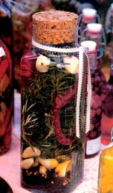

You can make these quick, inexpensive gifts even if you are craft-challenged and ridiculously busy.
When the holidays roll around, it's easy for me to rebel against the credit card companies and department stores pressuring us to shop 'til we drop. Waiting in long lines just to go into debt is not my idea of fun. Also, unless you're starting out in life-like our 21-year-old son who needs everything - most of us already have too much stuff in our homes, which we continue to rearrange until it eventually ends up in a landfill.
With all this in mind, I'm always in search of holiday ideas that will enable us to have the It's-a-Wonderful-Life kind of holiday while remaining environmentally and fiscally responsible. Homemade gifts to the rescue. Although some shopping is still necessary, it won't make much of a dent in your pocketbook. And believe me, I'm not talking about turning your house into a craft factory from August through December. Any crafts in my life must be easy to assemble, no glue gun or power tools required.
In case you're dismissing the homemade alternative because you don't have time, consider this possibility: Making these gifts takes less time than driving to your local department store and buying Uncle Fred a tie. Maybe you're remembering that crazy holiday season of '87 when you attempted to mass-produce complicated craft gifts for everyone you knew. I dutifully hang up my gold pinecone wreath every December as a reminder of the year the relatives decided that we'd all exchange only homemade gifts.
We learned from that experience, so I can offer you this sage advice: Get the kids involved; keep it simple; have fun; and enjoy getting into the spirit of giving.
These are great gifts even for the non-cook since you've saved them time by flavoring the vinegar. Print simple recipes on small cards and tie them to the bottle so the recipient knows what to do with the vinegars. And even if they don't use the vinegar, at least you've given them a lovely decoration for their kitchen.
I try to make a few jars of herb vinegars in the fall, before the garden freezes, for my kitchen and to give as gifts - but you also can buy herbs at the supermarket. Once you have the ingredients, the preparation time on these bottles is about 20 minutes.
SUPPLIES:
Recycled narrow jars and bottles
(not large)
Corks for lids, if needed
Fresh herbs, garlic, ginger, hot peppers
Vinegar - red or white wine, champagne or rice (seasoned)
Tbin ribbon or gold cord
Thick paper or unlined 3 1/2 - 5-inch index cards
APPROXIMATE COST
Corks: $2
Herbs and vinegars: Under $15
Ribbon, etc.: $3
STRATEGY
Start early by saving empty vinegar, olive oil, and dressing bottles, or any other pretty bottles you can find (take a second look at your recycling - or your neighbors'). Make sure the opening of the bottle is large enough to feed in the herbs, garlic or hot peppers. To sterilize, wash the bottles in bleach water, soaking them if necessary to remove labels. Then run them through the dishwasher. If the bottles are missing lids, buy a package of corks at a craft store. (Corks come in various sizes, so take the bottles and a tape measure with you.) Type or handprint your recipe cards. (See recipes below.)
Prepare the vinegars using any combination you like. How many herbs or peppers should be in a jar? Enough to infuse the vinegar with flavor - one stem of herbs won't do a thing. But if you pack the jar too full, you'll dilute the vinegar, reducing its acidity and creating an envi ronment for bacteria, according to a spokesperson for the U.S. Food and Drug Administration.
NOTE: This brings us to the question of why we can make our own vinegars but not infused oils. The folks at Wild Thymes Farms, who have been putting food in jars for decades, tell us that in an anaerobic (airless) environment, oils with herbs, particularly garlic, can grow some dangerous organisms. Vinegar is so acidic that bacteria won't survive in it. So let's stick with infused vinegars and not poison our friends.
Here are three infused vinegar recipes to get you started.
1 cup red wine vinegar, a quality brand will make a difference
3 large cloves garlic, peeled and slightly crushed
about 10 thyme stems (or oregano)
2-3 rosemary stems
I nsert garlic and herbs into bottle. You may need to cut the rosemary so it will fit; all ingredients must be submerged in vinegar. Using a glass measuring cup, pour the vinegar into the jar. Put lid on, or cork in, and let vinegar sit in a dark place for at least a week. These vinegars keep a long time, but I try to use mine up within six months.
1 cup rice vinegar (I prefer seasoned)
3 large cloves garlic, peeled and slightly crushed
2-3 small, thin hot peppers (cayenne, serrano), tops cut off so seeds areexposed
10-12 thin slices of ginger root
Prepare as above
2 tablespoons each: Red Wine Garlic-Herb Vinegar (see above), and aflavorful extra virgin olive oil
1 teaspoon Dijon mustard
1/2 teaspoon sugar
Salt and freshly ground pepper to taste
Whisk Together. Toss with fresh salad greens and some coarsely grated pecorino Romano cheese, or drizzle over grilled vegetables.
Tie up dried aromatic flowers (buy or dry yourself) in handkerchiefs to give to the women in your family. These are especially nice if the handkerchiefs belonged to a grandmother or aunt. My relatives loved theirs.
SUPPLIES
Vintage handkerchiefs
Sachet flowers
Rubber bands
Thin satin ribbon (1/8 to 1/4-incb wide)
APPROXIMATE COST
Handkerchiefs: $1 to $3 apiece
Sachet: not more than $5
Rubber bands and ribbon: $3
STRATEGY
The hardest part is finding a floral sachet with a wonderful smell. Last September, I bought some homemade sachet by the ounce from a woman who grows flowers and sells them at the farmer's market. I've also bought a pot of lavender in the spring, then cut and dried it in the fall (That might not help you this year, but put it on your to-do list for spring.) Check the more unusual gift stores in your town (not the mall, generally) for a homegrown sachet.
Hand wash and iron the handkerchiefs. Pour about 1/2 cup of sachet into the center of the handkerchief. Gather up the ends and wrap a rubber band around the part near the ball of sachet, so the sachet is tightly enclosed. Tie a matching ribbon around the rubber band, making a bow with long ends. Either tie a tiny gift card on with the ribbon or wrap the sachet as you would any other gift. (Gift bags work well.)
Your friend loves your recipe for Chocolate Zucchini Breads Make up a box of measured dry ingredients, mini-loaf pans, and a recipe card. For that relative who's impossible to shop for, put together a holiday appetizer basket - a good salsa, a log of soft goat cheese, blue corn chips and heating directions. Optional: serving bowl or plate.
SUPPLIES
A basket, fruit crate (check your grocer on delivery days), or an open box wrapped on the outside with holiday paper, ribbon, tag
Colored tissue paper or dish towel
Basket gifts
Colored 4x6-inch index cards for recipes (lined or blank cards--it's up to you)
APPROXIMATE COST
Depending on the goodies, about $15 to $20
Index cards: Less than $2
Laminating: $1 to $2
STRATEGY
Line the container with colored tissue paper or a new dish towel. Arrange your gifts in the container, tie on a ribbon and tag or sticker tag. You could tie on a cinnamon stick for the baking basket or a pinecone. Print by hand or glue on a printout of your recipe on a colored 4x6 index card. Be sure to include the date and your name.
If you want, most office supply stores ran laminate your recipe card within a few minutes. Laminating plastic onto your recipe will make it durable and wipeable. Cut out the recipe leaving at least a 1/4-inch laminate border so the plastic holds together.
Remember those photos you took at your nephew's graduation or Mom's 75th birthday party? Maybe a special vacation or memory you shared with relatives or friends? Pick out some of the best shots and frame them in a series using a mat and one frame with two to four photos. Sometimes it works to have a series of photos taken a few seconds or minutes apart, such as a toddler's first steps or 10-year-old's first soccer match.
SUPPLIES
Your negatives
A pre-cut mat
A frame
COST
$10 to $25
STRATEGY
For quality photos, take your negatives to a reputable camera/photo finishing store, not a discount store. I recommend having your photos made into 4x6 matte finish prints, which look more professional than glossy. Black-and-white photos can be very dramatic framed, so even if you only shoot color film, any photo developing lab can make black and white reprints for you.
Buy a simple wall frame so the photos will stand out. Then have a white of off-white mat cut to fit at any craft or framing store. Recycle frames you have at home, but you may have to purchase new glass at the framing store. To save time, buy the frame and mat at the same store.
Have the store mount your photos on backing, cut the mat and assemble it in the frame. Then type up your favorite memory associated with the photo-or write it out if your handwriting is good-and glue it on the back of the frame.
Sometimes, no matter what our good intentions, we don't have the time, we don't have the energy or we don't have the creative oomph to make a darned thing. However, this does not mean we need to dash to the mall and grab the first likely looking gift-suspect. Instead, give gift certificates: It requires no skill whatsoever, you only need to know your relatives' interests.
When I took a completely unscientific survey among women friends, we all said that we wished that we'd get more gift certificates for stuff we really wanted, e.g. manicures/pedicures, facials, visits to our favorite bookstores or catalog companies we just love.
SUPPLIES:
Zip, nada, zero
COST:
$10 to $??
STRATEGY
Find out your relative, friend or coworker's favorite restaurant, pizza delivery, movie theater, music- or bookstore. Just about every business you can imagine offers gift certificates, such as the YMCA's indoor skate park or the neighborhood espresso bar. Get creative and really surprise them. Of course, a gift subscription to a really great magazine - say Mother Earth News , for example - is always a classy choice.
And yes, you should wrap it so it will look like a gift, not an afterthought.
Most North Americans who have encountered the idea of "fair trade" have done so through their purchases of coffee. Though fair trade coffee is more expensive than regular coffee, advocates say it's better for the pickers and the environment. But in creased cost is not the rule in purchasing fair trade products. Bargains abound.
In the collection of mail-order catalogs listed here, we counted numerous great stocking stuffers for $5 or less (and other price ranges). All these distributors are members of the Fair Trade Federation (one of the best indicators that they live up to the fair trade credo).
Carvings International
Offers: olive wood carvings
3034 Colonial Way #23; San Jose, CA
95128-4308; (650) 355-1225
David Appalachian Crafts
Offers: everything quilted
Highway 404; P.O. Box 2; David, KY
41616; (606) 886-2377
dglmports
Offers: pashminas, home decor, bags
6137 Chamonix Court SE; Grand Rapids, MI 49546; (616) 942-2705
Friendship and Peace Society
Offers: embroidered pillows, bags
3211 Mayflower St.; Sarasota, FL
34231; (941) 922-7657
home.att.net/~e.rosser/imbro5001.htm
GIobalCrafts
Offers: variety of home and gift items
P.O. Box 518; New Windsor, MD
21776; (800) 366-5896 www.christianchildrensfund.org
Mountcastle International Trading
Offers: kitchen accessories, etc.
107 8th Ave.; St. Pete Beach, FL 33706;
(727) 360-4743 www.mountcastle.com
Nicaraguan Cultural Alliance
Offers: art and business cards
PO. Box 5051; Hyattsville MD 20782;
(800) 746-1160
Peace Coffee
Offers: Shade-grown beans
2105 1st Ave. S; Minneapolis, MN
55404; (888) 324-7872
peacecoffee.com
Susan Hebert Imports
Offers: Copper boxes, bowls, plates
2018 NW Irving St.; Portland, OR 97209;
(503)248-1111 www.eCobre.com
Tibet Collection
Offers: jewelry, clothing, note cards
5778 Second Street NE: Washington,
DC 20011:(800)318-5857
Tribal Fibe r
Offers: hemp and batik items
P.O. Box 707; Nederland, CO 80466;
(888) 712-8585; www.tribalfiber.com
|
 Even if you don't cook, you can make beautiful herbed vinegars for your holiday gifts using herbs from your garden or the store. Save attractive bottles all year 'round. |
A unique card from Nicaraguan Cultural Alliance |
|